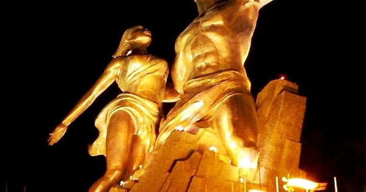
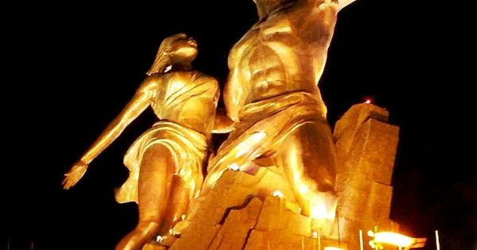
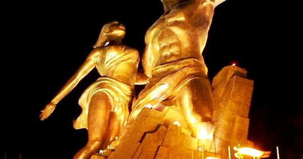
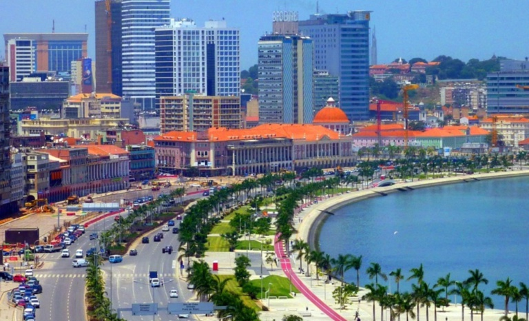
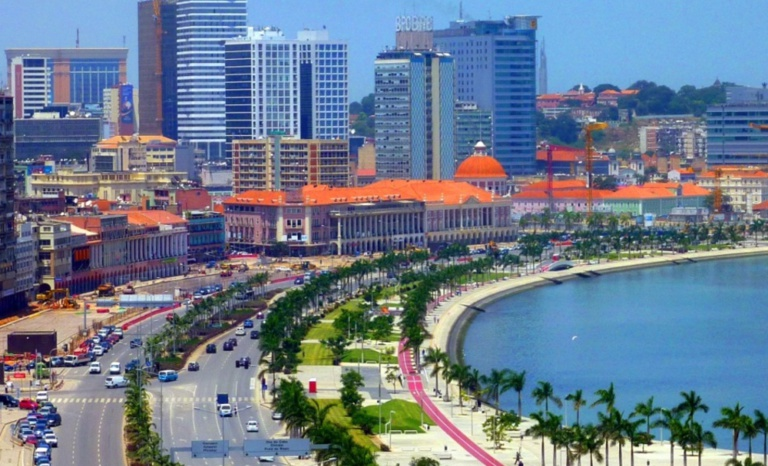

Senegal tourisme
Le monument de l'Independance du Senegal
De l’œuvre du premier président Léopold Sédar Senghor à celle de Me Abdoulaye Wade, président de la République, force est de constater que l’enseignement à distance, entre « l’élève » et le « maître », ou l’héritage que le « fils » revendique et s’approprie, est loin de laisser indifférent la postérité… C’est le cas de ces deux monuments aux fortunes diverses… Si nous parlons culture, ces deux grands présidents qui ne partagent pas les mêmes convictions politiques semblent partager la même sensibilité artistique et culturelle, même s’il est évident qu’il serait difficile de les classer dans une même catégorie.

Visitons la présidence et quelques présdents du Senegal
La République du Sénégal est laïque, démocratique et sociale. Elle assure l’égalité devant la loi de tous les citoyens, sans distinction d’origine, de race, de sexe, de religion. Elle respecte toutes les croyances. La langue officielle de la République du Sénégal est le français. Les langues nationales sont le Diola, le Malinké, le Pular, le Sérère, le Soninké, le Wolof et toute autre langue nationale qui sera codifiée. Régime présidentiel pluraliste : le président de la République est élu au suffrage universel et pour sept ans. L’actuel président de la République, Macky Sall, est élu le 25 mars 2012. Le Parlement : Les assemblées représentatives de la République du Sénégal portent les noms d’Assemblée nationale et de Sénat. Leurs membres portent les titres de députés à l’Assemblée nationale et de sénateurs.
Les merveilleuses plages et places du Senegal
Le littoral est bordé d'une succession de villages de pêcheurs et de plages de sable plantées de cocotiers. Malheureusement, la propreté des eaux n'est pas exemplaire et la mer est très dangereuse (fonds mouvants et fortes vagues). Allez vous baigner à Robinson-Plage, où la mer n'est pas trop agitée.
 

Venez visiter le SENEGAL